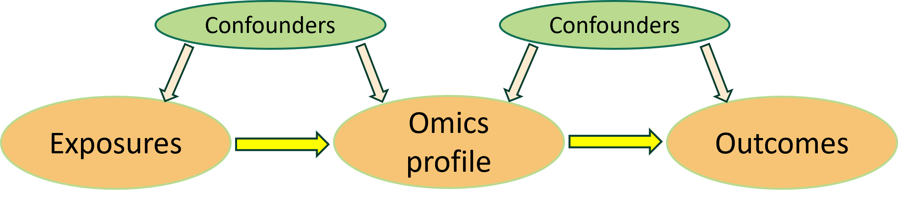
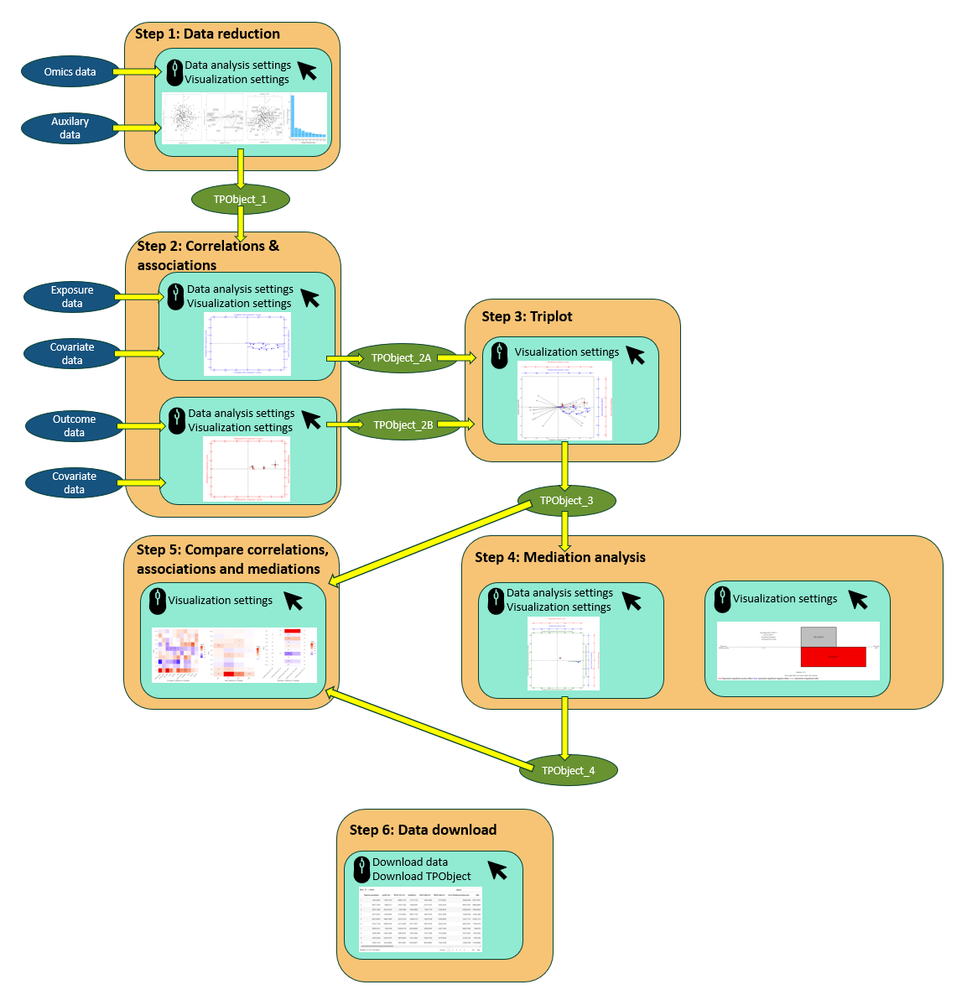

Overview

Most observational epidemiology research studies associations between single exposure and outcome. Emerging exposure- and outcome-wide studies aim to more broadly identify potential risk factors and their health effects. Although omics technologies have permitted linking exposures to outcomes via molecular data, large-scale exploration of mediating mechanisms is frequently lacking. Likely because Omics data are often high dimensional and there is a lack of effective tools for direct interpretation of the complex relationships between multiple exposures, Omics and outcomes. We therefore developed the TriplotGUI tool to advance exposome-risk assessment and facilitate the visualization and interpretation of such complex associations via metabolic regulation.
The application adopted a highly reactive stepwise modular design, where one or two modules represents one of the 6 following steps and the change of input from an early step will feed into a later step.

Steps
Step1: Data reduction of omics data
Transforms the Omics data into a number of components using principal component analysis (PCA) or weighted correlation network analysis (WGCNA).
Step2A: Exposures’ correlations
Assesses correlations between exposures and component scores from Step 1. Confounders can be adjusted.
Step2B: Outcomes’ associations
Assesses risk associations between outcomes and the component scores from Step 1. Confounders can be adjusted.
Step3: Visualization of Triplot
The component scores and loadings, the correlation coefficients and the risk associations’ estimates as beta coefficients or odds ratio, are co-visualized as 3 different layers in one 2-dimensional plot.
Step4A: Mediation analysis and visualization
Performs mediation analysis on the selected exposures and outcomes, using component scores as mediators. The mediation estimates (i.e. indirect and total effect) or the proportion mediated are then co-visualized with the correlation coefficients of the selected exposures and the risk associations’ estimates as beta coefficients or odds ratio of the selected outcomes, as 3 different layers in one 2-dimensional plot.
Step4B: Visualization for single mediations
A clear overview of the magnitude and direction of indirect, direct and total effect of each single mediation analysis can be visualized through bar plots.
Step5: Compare correlations, associations and mediations
The correlations, associations, mediation estimates and proportion mediated as well as their significance levels can be visualized through heatmap.
Step6: Download data
The intermediate data and the generated results can be viewed and downloaded. The object that saves all relevant information can be downloaded.
We will give detailed explanations of statistical data analysis and visualization in each step in the workflow session.